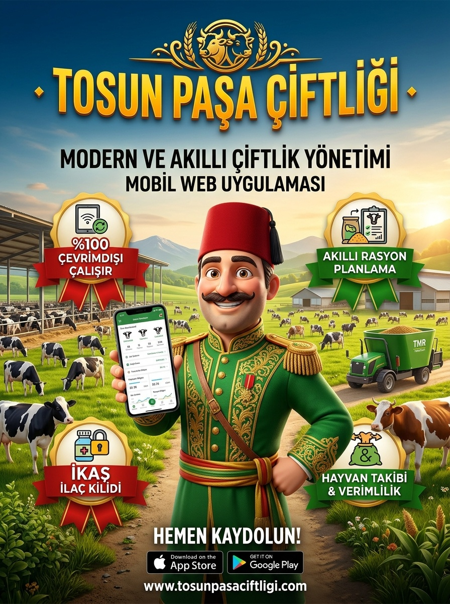
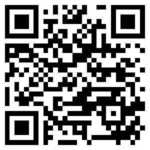

⭐ TÜRKİYE'NİN ÇİFTLİK VE HAYVANCILIK EKOSİSTEMİ
Tosun Paşa Çiftliği
Cebinizdeki Akıllı Veteriner, Yem Uzmanı ve Çiftlik Defteriniz!
İnternetin hiç çekmediği dağda, yaylada veya bodrum ahırında tıkır tıkır çalışan, sürü sağlığını koruyan ve yem maliyetinizi düşüren yeni nesil bütünleşik hayvancılık portalı.
🌾 1. Yetiştirici Sürümü (Sade & Pratik)
• Küpelerim: Tek dokunuşla kulak küpesinden hayvan bulma ve geçmiş kayıtları.
• 🚨 İlaç Kilidi (İKAS): Mandıra cezasından koruyan canlı saniyelik arınma sayacı.
• 🌾 Kendi Yemini Hazırla: 83 yem hammaddesi ve fabrika yemiyle inek başı ve mikser vagonuna pratik kilogram dağıtım hesabı.
• 🚑 15 Acil İlk Yardım: Şişme, doğum felci ve asidozda hayat kurtaran altın adımlar.
• 🍼 Buzağı Takvimi: 35. gün ultrason, 220. gün kuruya alma ve aşı gün sayacı.
• 🚨 İlaç Kilidi (İKAS): Mandıra cezasından koruyan canlı saniyelik arınma sayacı.
• 🌾 Kendi Yemini Hazırla: 83 yem hammaddesi ve fabrika yemiyle inek başı ve mikser vagonuna pratik kilogram dağıtım hesabı.
• 🚑 15 Acil İlk Yardım: Şişme, doğum felci ve asidozda hayat kurtaran altın adımlar.
• 🍼 Buzağı Takvimi: 35. gün ultrason, 220. gün kuruya alma ve aşı gün sayacı.
🔬 2. Zooteknist & Veteriner Sürümü (Bilimsel & Uzman)
• 🤖 LP Simplex Robotu: NASEM & NRC 2021 normlarında Least-Cost doğrusal rasyon minimizasyonu ve Pearson karesi.
• 🚜 TMR Vagon Kantarı: Her yem için dara sıfırlama (tare) ve homojen karışım denetimi.
• 🩺 Saha Triyaj Karar Ağacı: Ağırlıklı semptom analizi, dehidrasyon sıvı sağaltımı hesabı ve Brix kolostrum analizi.
• 🌱 Tarla & Agronomi: Tohumluk torba robotu ve mikrodalgada 5 dakikada silaj kuru madde (KM) nem tayini.
• 🚜 TMR Vagon Kantarı: Her yem için dara sıfırlama (tare) ve homojen karışım denetimi.
• 🩺 Saha Triyaj Karar Ağacı: Ağırlıklı semptom analizi, dehidrasyon sıvı sağaltımı hesabı ve Brix kolostrum analizi.
• 🌱 Tarla & Agronomi: Tohumluk torba robotu ve mikrodalgada 5 dakikada silaj kuru madde (KM) nem tayini.

📲 Anında Ücretsiz Kullanmaya Başlayın!
Telefonunuzun kamerasıyla QR kodu okutarak uygulamayı doğrudan tarayıcınızda açabilir, ana ekranınıza ekleyip internetsiz kullanabilirsiniz.
mserman90.github.io/tosun-pasa-ciftligi/
📶 %100 Çevrimdışı Çalışır
•
🔒 Sıfır Harici Sunucu / Cihazınızda Güvende
•
💾 Tek Tıkla Excel & JSON Yedek